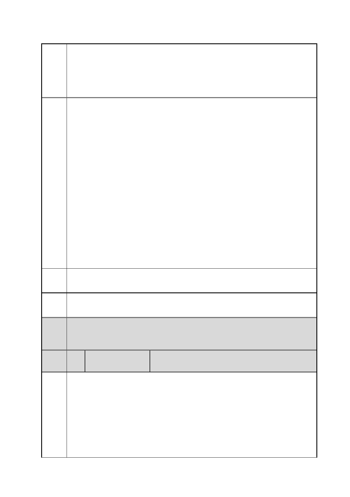

臺北市都市計畫委員會 公民或團體陳情意見綜理表
「變更臺北市信義區逸仙段二小段 33 地號等 21 筆土地（原臺北機廠）
案
名
工業區為創意文化專用區、特定專用區、道路及綠地用地主要計畫案」
及「擬定臺北市信義區逸仙段二小段 33 地號等 21 筆土地（原臺北機
廠）創意文化專用區、特定專用區、道路及綠地用地細部計畫暨劃定
都市更新地區計畫案」
館渴望已久，但文化任務必須是保存和創新雙向進行的，因此我們堅
決反對政府以建美術館之名行炒作之實；更反對政府以文創之名，罔
顧保存史地文脈的責任，供給商業利益的巧取豪奪！台北機廠本身內
外條件不但不適合成為美術館，藝術界更認為這是虛招，華山文創園
區和松山菸廠的案例，都是以文創之名卻一昧地向商業和消費傾斜，
縱容私人營利者嚴重切割工業文明的完整紀錄！而一旦完成了讓予
企業的轉手過程，創作者是租用不起已經縉紳化的文創空間的。更令
藝術界擔憂，接著的兩岸服務貿易協定，讓藝文場所的經營權也拱手
讓出，台北機廠的美術館和文創園區計畫，是不是一場文化的木馬屠
城記呢？
視盟呼籲政府，停止這個毀壞工業史蹟和偽文化園區的雙重謬誤政
策，因為它既不符合公共利益、不是藝術界對文化館設的需求，更不
是我們對文化建設之公義價值的想像！而在國家如此缺乏文化資產
保留的觀念、缺乏對都市建設的前瞻眼光之際，我們更要求政府對於
公共場域的規劃，應該充分地公開討論，讓專業者和使用者、讓有瞻
觀的公民們一起架構對國家和城市的文化和地貌想像！
建議 保存原蹟原址為鐵道博物館，盡全力完整保留工業文明的完整紀錄。
辦法
市府 同編號 2 市府回應內容。
回應
委員
會議 內容同編號 1。
決議
編
號
陳情
理由
4 陳情人
交通部高速鐵路工程局
查貴府旨述公告及公展之範圍內，本局持分管有信義區逸仙段二小段
33-7、33-13、33-14、33-15、33-28、33-29 地號等 6 筆土地各持分 1/2
（原臺北機廠），擬變更為「創意文化專用區」、「特定專用區」、「道
路用地」、「綠地」等不同之土地使用分區（主要計畫書，第 22-23 頁）。
惟查該等 6 筆土地現況為高鐵隧道及緊急逃生出口等設施使用，詳細
使用情形分述如下：
(一)同段同小段 33-13 地號土地，為高鐵隧道及 7 號抽水機房使用（地
下）。
第 17 頁/共 154 頁